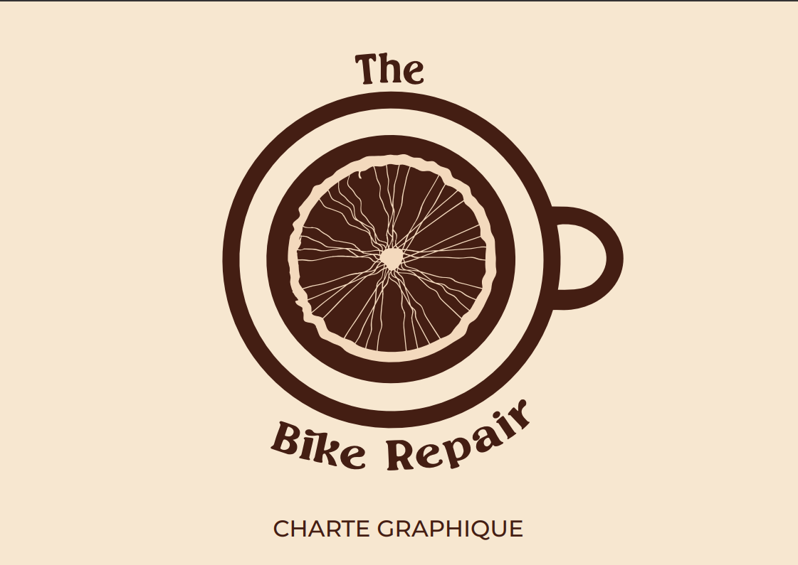

Visual Identity for a Community Bike Workshop
This project was carried out as part of an artistic culture course. The goal was to create the complete visual identity for a community bicycle workshop.
The logo features a top-down view of a coffee cup, with a stylized bicycle wheel blended into the foam. The goal was to visually convey the venue's dual purpose with a warm, handcrafted feel.
For the brand assets, I opted for simple and clear iconography: a bicycle, coffee beans, an adjustable wrench, and a tire tread mark. These elements can be used individually or repeated as seamless patterns.

For the coffee shop, I used Scintilla, an elegant vintage serif. For the workshop, I paired it with Montserrat, a structured and modern sans-serif.
The color palette relies on four core tones:
These complementary shades seamlessly bridge the gap between the venue's two identities.
I designed a clean and intuitive website mockup. The objective was to ensure smooth navigation supported by a distinct visual hierarchy.
The landing page introduces the overall concept, complemented by dedicated sections for the café, the workshop, available services, and bookings. I used beige as the base background to keep it soft and legible, accented by deep brown typography.
This project gave me hands-on experience developing a coherent visual identity from a hybrid concept. I learned how to balance shapes, color theory, and typography to build an instantly recognizable atmosphere, while refining my web layout skills with user experience in mind.